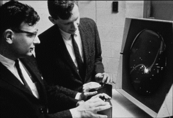
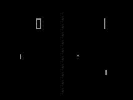
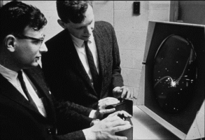
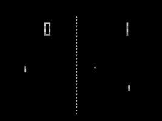

A PONG volt az első nagy népszerűséget és széleskörű ismertséget szerzett videojáték. 1972-ben készítette el Allan Alcorn, az Atari cég mérnöke. Ez egy asztalitenisz játék, amit egyszerű kétdimenziós grafikával oldottak meg. A két játékos egy-egy függőlegesen mozgatható ütőt irányít. A cél a labda sikeres visszaütése. Amennyiben ezt valamelyik játékos elvéti, az ellenfele pontszáma eggyel nő.
Az első játéktermi változatok egy fa dobozon belül tartalmaztak egy televízió készüléket, a játékot megvalósító elektronikát és természetesen a pénzgyűjtő egységet.